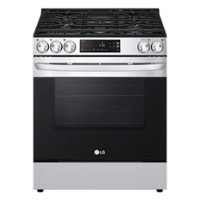

8/19/2022 Today I made a website for the first time! I had some much fun for the second day of school. I also have a party to go to today and practice tmrw which will be fun!
9/1/2022 I had an amazing week! I had pratices and we did a lot of new things in class such as tinkercad which I made stove it shouldve won.

9/16 my week was very fun i had a great time. I went to a few practices and i learned so much while acing my tests! We worked on projects and me and my team made a lot of improvments on our rudegoldberg machine.